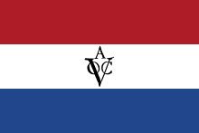
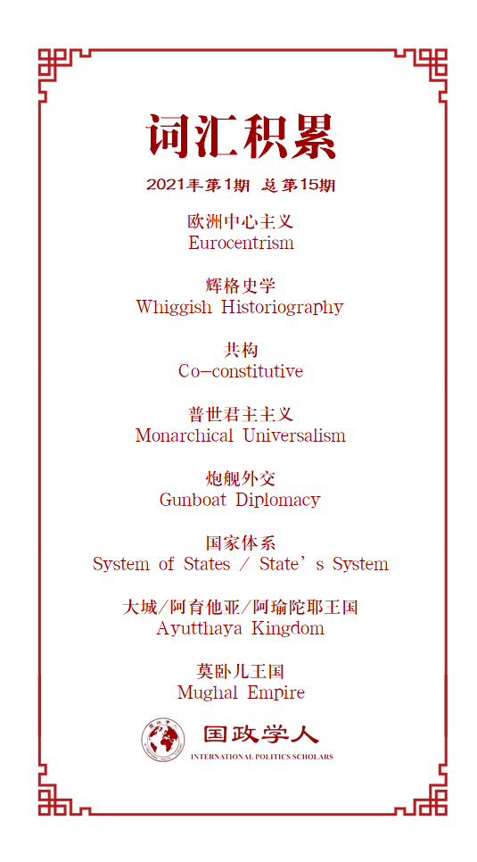

收录于合集

作品简介
【作者】 Kevin Blachford，现爱沙尼亚波罗的海防务学院（Baltic Defence College）讲师。研究领域为国际关系和安全研究，具体兴趣包括共和主义（republicanism）、军国主义和美国外交。博士毕业于温切斯特大学（University of Winchester），曾任教于布里斯托大学（Bristol University）、威斯敏斯特大学（Westminster University）和朴次茅斯大学（Portsmouth University）
作者信息见：https://www.etis.ee/CV/Kevin_Blachford/eng 和 https://www.tlu.ee/en/yti/international-relations#academic-staff
【编译】 陈勇（国政学人编译员，北京大学国际关系学院国际关系专业硕士）
【校对】 王川
【审核】 赵雷
【排版】 马璐
【美编 】游钜家
【来源】 Blachford, Kevin. “Revisiting the expansion thesis: international society and the role of the Dutch East India company as a merchant empire.” European Journal of International Relations 26.4 (2020): 1230-1248.
【归档】 《国际关系前沿》2021年第1期，总第28期。
期刊简介
《欧洲国际关系杂志》（European Journal of International Relations，EJIR）是欧洲政治研究联盟国际关系常设小组（the Standing Group on International Relations of the European Consortium for Political Research, SGIR）的同行评审旗舰期刊, 由SGIR和欧洲国际研究协会组成的联合委员会共同管理，旨在发表国际关系领域经同行评审的学术贡献，从尖端的理论辩论到当代和历史层面的主题，再到国际关系学者和实践者均有涉及。2019年该刊影响因子为3.474，在95种国际关系类期刊中排名第6（6/95）。
重审扩展论：国际社会以及荷兰东印度公司作为商业帝国的角色
Revisiting the expansion thesis：international society and the role of the Dutch East India company as a merchant empire
内容提要
本文通过关注商业帝国—如荷兰东印度公司(VOC)在塑造欧洲与非西方世界的互动中所扮演的角色—开辟了新的领域。通过观察东印度公司及其在亚洲的扩张如何影响了欧洲内部的发展，本文对英国学派以国家为中心的，关于国际社会的扩展论提出了批评。作为一个非国家行为体，东印度公司发展了贸易和权力的网络，这些网络与荷兰对抗伊比利亚霸权的斗争相互交织。本文认为，国际法、主权平等和欧洲国际社会的发展都需要被理解为是在这些殖民碰撞中形成的。将东印度公司视为一个商业帝国是一种更注重细节的扩展论，它承认国家、帝国和早期现代公司以一种共同演化的方式发展。这种批判性路径要求学者承认国际社会是一种由不同文化的争论所形成的持续进程。
文章导读
01
引言
国际社会的扩展是英国学派的“旗舰性观点（flagship idea）”（Buzan 2004a,b: 1）。国际社会的扩展论描述了欧洲人如何在全球范围内传播规范和制度，从而形成了今天的“世界社会（world society）”(Buzan, 2004a,b)。它是一种由欧洲向外扩张的单向文明化进程。尽管对这种以欧洲为中心的叙事的批评已有不少(Callahan, 2004; Hobson,2012: 222–233; Keene, 2002; Seth, 2011; Suzuki, 2005; Zhang, 2011)，但英国学派并未充分地探讨这些批评的含义，原因是其根植于国家中心（state centric）和欧洲中心的19世纪辉格史学（whiggish historiography）传统（Keene, 2008）。虽然一些英国学派学者，如理查德·利特尔（Richard Little，2004），着重呼吁深入研究世界历史，但仍然有必要重新审视和修改扩展叙事。因此，作者希望开辟新的领域，以荷兰东印度公司为例考察商业帝国在欧洲与非西方世界的互动中扮演的角色。
由于英国学派常常忽略非国家行为体的角色以及他们在国际社会规范、价值观和制度形成过程中的作用（Col´as, 2016），所以尽管布尔和沃森都承认荷兰东印度公司的重要性，但它作为非国家行为体的角色，以及在欧洲以外的外交、战争和贸易行为还未得到充分的理论化。本文旨在考察近代早期欧洲贸易公司与非欧洲人群和政治体的互动。作者认为应当对国际社会的扩展有两点看法。一是要认识到非欧洲行为体的能动性——欧洲的商业势力并非是进入了政治真空地带，而是与已经存在的发达的重要政治体共存和互动。其次，欧洲国际社会的秩序与获得帝国财产和进行贸易的向外扩张动机是共构（co- constitutive）的关系。布尔和沃森的研究承认欧洲国家间关系的发展与欧洲人在全球的扩张是同步的过程，且两者相互影响（Bull and Watson，1984: 6）。但这一细微的观点被后世的英国学派学者所忽略（Clapton, 2017: 350; Dunne and Reus-Smit, 2017: 4）。考察欧洲国际社会如何与欧洲的扩张共同演变能够复兴这一更具有全球色彩的扩展论。
02
英国学派的“欧洲中心主义”
（The English School’s eurocentrism）
国际关系理论用国际社会的概念来解释无政府体系下民族国家之间的和平关系，致力于展示一种介于马基雅维利式现实主义（Machiavellian realism）和康德式自由主义（Kantian liberalism）之间的格劳秀斯式的第三条路径（Bull [1977] 1995: 23）。在威斯特伐利亚框架的基础上，国际社会的主要目标被解释为维护其组成成员的独立和外部主权（Linklater, 2005: 84）。通过关注国际法、道德规范以及外交的作用，国际社会理论展示了国家体系（system of states）中秩序是如何被创建的。《威斯特伐利亚和约》（The peace of Westphalia）被视为国家体系（state’s system）演变的重要基准日期，国际社会的起源因而可以追溯到15至18世纪的欧洲（Keene, 2014）。这种外交观点在许多历史学家眼里颇有争议，并被认为是过时的（Krischer and Von Thiessen, 2019: 1100）。正如批判理论学者所言，国家和国家体系的概念很大程度上来自于对欧洲历史的狭隘的解读，使得西方被特别地视为现代（Pourmokhtari, 2013）。因此，只关注欧洲国家体系的有限取向导致了欧洲以外的帝国、等级制度和关系动态的缺失（Barkawi, 2010）。
无政府体系框架内的国家也存在问题，因其建立在1648年神话之上，后者认为政治秩序仅仅是欧洲内部动态的产物（Hobson, 2009）。英国学派将欧洲历史放在了特殊地位，欧洲被誉为“文化中心（cultural heartland）”和国际社会的发源地（Buzan and Little, 2014: 60; Linklater, 2010），现代国家的起源被限定为“典型的欧洲现象（Buzan and Little, 2000: 246）”。当考虑非欧洲地区时，英国学派传统上将它们描述为“独立的、文化统一的区域国际体系”（Dunne and Reus-Smit, 2017: 43），因此很少考虑到这些迥然不同的文明之间的联系。在这种视角下，欧洲秩序和非欧洲秩序是截然不同、互不相关的。这意味着殖民地人在被接纳进入国际社会之前，几乎没有能动性（Dunne和Reus- Smit, 2017: 36）。巴里·布赞（2014a,b: 63 & 73）尽管注意到先前存在的区域性社会，但认为“欧洲的扩张压倒（overrode）”或“覆盖（overlaid）”了这些已存在的体系。但是，覆盖已有的区域体系的概念也意味着从欧洲到世界其地区的单向的“整合”的过程（Dunne and Reus-Smit, 2017: 6)，轻视了欧洲帝国主义的共构属性，以及它们与民族国家和国家体系的形成的关系。爱德华·基恩（Edward Keene）在英国学派的框架内为揭示威斯特伐利亚国际社会与欧洲帝国主义的关系做了大量工作。他对格劳秀斯的研究表明，当欧洲国际社会逐渐建立一种基于主权平等的“宽容（toleration）”的政治秩序的同时，欧洲人在区域外发展出以“促进文明”为要旨的帝国秩序（Keene, 2002: 7）。尽管阐明了“欧洲以外的政治秩序（extra-European political order）”，但他的解释可以被理解为存在由两个截然不同的独立系统组成的国际秩序：一个欧洲的威斯特伐利亚体系和一个由帝国主义主导的非欧洲秩序（Kayaoglu, 2010: 206）。欧洲核心与国际社会之外的，被殖民的其他国家的分离可能反映了欧洲在19世纪的主导地位，但无法解释欧洲列强在近代早期的扩张。因此，作者认为，国际关系领域有必要考虑一种更多层次的路径，将领土主权国家和帝国（的形成）视为一个共构（co- constituted）的发展（过程）（Benton, 2009）。文章下一部分就会将欧洲势力的发展与商业行为体在非西方世界的互动联系起来。
03
**
**
作为商业帝国的荷兰东印度公司
扩展论需要更加细致地考察商业力量的崛起以及它们的殖民遭遇（encounters）如何促进了国际社会的发展。 主权平等和航行自由等概念被视为现代国际社会的关键，也与欧洲商业帝国的崛起密不可分。
荷兰东印度公司（荷兰语：Vereenigde Oost-Indische Compagnie，因此以下简称VOC）成立于1602年，是在政府的指示下由几家贸易公司合并而成的。从一开始，VOC就是一个“拥有主权权力的私人公司”（Sharman, 2019: 74）——有能力进行贸易，签署法律条约，管理领土和对外国发动战争。VOC也是第一个在多个大洲开展活动的跨国行为体（Rei, 2018: 2）。尽管有时得到政府支持，但它也发展成为一个独立的、拥有民间自主性（civic autonomy）的商业组织。因此，VOC不应被仅仅视为荷兰政府的附属物（Sharman, 2019a: 178）。在试图定义VOC在国际范围内的地位和角色时，英国学派以国家为中心的观点出现了问题。VOC名义上是一个独立的行动者，但在荷兰共和国的形成过程中也发挥了至关重要的作用。在80年的独立战争期间，VOC是荷兰人抵抗西班牙霸权，为共和自由而斗争的“武器”(Schnurmann, 2003: 479)。

荷兰共和国（the Dutch Republic）的发展及其作为一个独立国家被正式承认与VOC在东南亚对贸易和资源的追求紧密交织。 在扩大商业机会的过程中，VOC在新世界建立了殖民地，以及横跨印度洋、从南非开普敦到日本长崎出岛（Dejima）的“非正式”帝国（Van Welie, 2008: 70）。在与西班牙的十二年停战（注：1609-1621）期间，荷兰共和国得到了间接和非正式的事实上的独立承认(Schnurmann, 2003: 479)。然而，仅仅承认并不能结束冲突。西班牙提出，如果荷兰从印度群岛（Indies）完全撤出，它将提供永久和平的协议（Israel,1977; Parker, 1976）。将战争持续到1648年的愿望很大程度上是由VOC的商业利益驱动的。按照大卫·阿伯内西（David Abernethy, 2000:218）的观点,荷兰共和国是追求私利和使用外部力量支持欧洲扩张之间的“共生关系”的完美例证。荷兰人利用私掠船来挑战伊比利亚人在欧洲和东南亚的霸权就证明了这一点。
在现代国际社会中，主权独立和国家平等（原则）的发展部分是由于荷兰试图挑战西班牙的普遍统治主张。 近代早期，西班牙人曾试图宣布对土地和水的普遍主权的概念。1493年亚历山大六世的教皇诏书（papal bull）和1494年的《托尔德西拉斯条约》（Treaty of Tordesillas）给了伊比利亚势力控制所有的美洲土地、亚速尔群岛（Azores）以西水域和到东南亚的贸易路线的权力 （Branch, 2010; Schnurmann, 2003）。荷兰人在亚洲扩大贸易的动力就来自对这些普遍主义的主张的反抗和对立。作为对荷兰起义的回应，西班牙的腓力二世（Philip II of Spain）禁止荷兰人进入伊比利亚半岛的港口。荷兰的反应是在1595年至1602年间派遣15支舰队的65艘船到亚洲，以打破伊比利亚人对香料贸易的霸权（Bluss´e, 2015: 231）。在利用贸易作为对抗伊比利亚强权的武器之后，荷兰最终通过1648年签订的《明斯特条约》（Treaty of Munster）让自己的独立地位得到承认。该条约确认联省共和国（United Provinces）为一个主权国家（Baena, 2007）。因此，如果不将私人武力的使用和VOC在东南亚的扩张囊括在内，就无法讲述荷兰共和国为主权平等的抗争，在理解独立主权国家的本质时，需要认识到国家和商业帝国是共同进化（co- evolutionary）的。
VOC的崛起及其殖民势力的深入发展与欧洲主权平等的规范和法律权利的发展相互交织。 VOC作为独立行动者的能力及其攻击伊比利亚势力的法律依据与格劳秀斯的工作息息相关。贸易自由和航行自由的理念源于格劳秀斯为东南亚荷兰私掠行为的辩护。1603年，荷兰在亚洲水域扣押葡萄牙船只圣卡塔琳娜号（Santa Catarina），格劳秀斯为此辩护，称真正的海盗“是那些试图干涉旅行和贸易的自然权利的人”（Brown, 2011: 253）。对于格劳秀斯来说，西班牙和葡萄牙帝国的普世君主主义（monarchical universalism）意味着他们是“海洋的封锁者”，而在攻击这种专制主义时，保护商业对于确保自由至关重要（Porras, 2005: 757）。这也是对伊比利亚人对亚洲海上航线和贸易的主权主张的攻击。为了证明贸易自由的合理性，格劳秀斯还承认南亚的本地统治者，如柔佛国王（King of Johor），拥有自己的主权。他的做法挑战了教皇分割领土、岛屿或海洋的权力，为主权平等提供了法律基础，挑战了伊比利亚列强的政治普遍主义（Borschberg, 1999）。在以海洋航行自由为代表的社会规范发展之前，欧洲行为体经常寻求对水体的所有权(Mancke, 1999)。随着时间的推移，贸易自由和航行自由的概念已为国际社会接受，但它的起源却深深地植根于VOC在亚洲的私掠。
英国学派的扩展论认为资本主义、现代性和现代国家形式都起源于欧洲，之后向外传播到缺乏这些特征的地区（Seth, 2011: 172）。作者指出，以航行自由为代表的主权平等准则的发展是与VOC殖民地利益的扩大联系在一起的，欧洲的法律制度和政治秩序的观念也受到远在欧洲之外的事件的影响（Benton, 2005）。
04
荷兰东印度公司的外交与欧洲中心主义
在欧洲中心的视角下，英国学派主要关注以“国家间对话”（Watson，1982）为代表的，理想化的大国之间的贵族外交图景（Sharp，2003）。但这忽略了非国家行为体和商业帝国在欧洲国际关系扩展中所扮演的角色，同时它也不总是从欧洲自上而下到从属的非西方“他者”的过程。在已有的政治秩序体系中，欧洲列强通常是较大区域斗争中的“次要角色（minor player）”（Sharman, 2019b: 35）。 VOC作为国际行为体的经验表明，外交规范和实践往往涉及到欧洲人学习地方规范并与非欧洲势力合作的过程。
VOC进入了印度洋的国际体系。这个体系中有大量不同的外交参与者，组成了一个多样化的国际秩序（Philips and Sharman, 2015a）。但欧洲列强的势力扩张并不总是征服（Sharman, 2019b: ix），有时不得不接受劣势地位。菲利普斯和沙曼（Philips and Sharman，2015b: 439）已经展示了欧洲人是如何通过“根据地区背景变换身份，成为附庸、合作伙伴或宗主国”来融入当地等级制度的。思考VOC的外交可以对欧洲国际关系的扩展和非西方世界提供更细致的描述，在这种叙事中，现代国家、国际社会和帝国主义实践的兴起是同步进行的。
VOC必须遵从当地的期望和规范，以获得承认和贸易许可。 17世纪，为了获得和暹罗贸易的机会，VOC的代表必须参加暹罗大城皇室（Siamese court of Ayutthaya）繁复耗时的仪式。当贸易和仪式“不可避免地混杂在一起”时，参与宫廷仪式对于保持对方好感至关重要（Ruanglsip, 2007: 56）。尽管扩展论常常忽略非欧洲行为体的能动性，但VOC确实需要依靠地区行为体来拓展欧洲人的贸易渠道。暹罗甚至在1608年至1611年期间向荷兰派遣了使团，并帮助VOC成为扩大荷兰对中国贸易的中介（Borschberg, 2019）。
荷兰和地区行为体之间的国际条约往往是在当地即兴发挥的结果（Ittersum, 2016: 492）。 荷兰与马来半岛和日本德川幕府的关系可作为例证。VOC官员会修改官方和半官方文件的翻译，以适应特定的目标受众。在与外国皇室打交道时，荷兰官员会提到“荷兰国王（King of Holland）”，尽管他们是共和政体的代表（Clulow, 2013: 28）。荷兰官员是有意识地使用这个称号的，为的是避免冒犯外国统治者，因为后者会把承认没有“国王”的状态视为生活在混乱之中、缺乏习惯法或正义的标志（Borschberg, 2017: 293）。
荷兰共和国没有君主的状态被证明有利于VOC与其他亚洲行为体的协商。VOC的使者是受到公司的委托（Meersbergen, 2019），因而不必关心如何代表远方君主的荣誉。相反，他们可以臣服于莫卧儿皇帝（Mughal emperors）的保护，接受作为附庸的地位，以获得贸易许可（Meersbergen, 2017）。VOC的商人外交官向莫卧儿皇帝提交礼物，表明他们对莫卧儿主权的承认（Birkenholz, 2017）。这是一种有意识地服从本地习惯的做法。
国际社会的扩展论淡化了非西方的能动性，并否定了欧洲人以弱势地位进入亚洲体系的过程（Sharman, 2019b）。 尽管拥有先进的海军技术，并使用了炮舰外交（gunboat diplomacy），VOC也无法在与波斯君主（Matthee, 2004）或日本德川幕府(Clulow, 2009)等统治者打交道时取得优势，甚至经常被地方势力视为可借用的工具。海军优势在胁迫陆上强国时作用也很有限。例如在与莫卧儿帝国的对抗中，欧洲商人遭遇了“根本的力量不均”(Sharman, 2019b: 68)，被莫卧儿王朝所利用，以加强在地区竞争中的地位。
VOC的外交致力于通过展现其贸易和政治实力来增强荷兰在欧洲的权力（Swan, 2017: 197）。VOC向亚洲统治者赠送礼物的做法也发展了当地的同盟者（Meuwese, 2013），并向礼物赠予者（VOC自身）、接受者和外部观察者都传递了关于政治地位和关系的信息（Birkenholz, 2017: 220）。因此，这与荷兰向欧洲国家的王室赠送礼物，以提高共和国声望的做法没有什么不同（Broekman and Helmers, 2007）。这些基于声望和贸易的外交形式经常被进步叙事所忽视，个人外交被专业化和官僚外交的“高级”政治所取代(Meersbergen, 2017)。
05
结论：深化对全球史和欧洲扩展的理解
本文展示的例子表明，如果不认识到VOC在亚洲开展贸易的努力是一种对抗伊比利亚霸权的武器，就无法理解主权承认和格劳秀斯的一些法律主张，后者也是英国学派格劳秀斯传统的灵感源泉。与国际社会产生于欧洲内部的观点不同，格老秀斯的许多论点是从欧洲以外的殖民问题发展而来的（Barreto，2017:154）。
国际社会通常被视为国际政治中一个永恒的“自然”概念（Keene, 2005: 202），但本文力图说明，国家、国际社会和国际体系可以表现为不同的类别和形式。国际社会的提法暗示了19世纪欧洲的至高地位的源头可以追溯至几个世纪前，对“欧洲主导地位”的关注也说明有一种欧洲行为体之间的“统一战线（united front）”，但这种形式并不存在（Keene, 2002: 79）。VOC利用贸易作为对抗其他欧洲强国的方式，但与此同时，他们也被拖入了其他地区已有的竞争网络。对欧洲商业帝国的作用进行广泛的研究，更多地认识到它们与亚洲行为体的关系，可以加深我们对欧洲与非西方国家相互交织的发展（过程）的理解。
译后记
通过分析荷兰东印度公司在塑造欧洲国际社会规范和与外部世界关系中的作用，本文试图补充和修正传统以欧洲国家为中心的国际社会扩展论。
如邓恩（Timothy Dunne）和罗伊斯-斯米特（Christian Reus- Smit）所言，以布尔和沃森所著的《国际社会的扩展》为代表的英国学派传统的扩展观点是特定时代的产物——文章大多写于二战后去殖民化运动后和冷战结束之前。而在80年代及冷战结束之后，一些新的研究动向，例如批判理论与后结构主义的挑战、建构主义的兴起、对经典现实主义和历史研究的再挖掘、国际关系理论和政治经济学研究的发展等，都促使学者进行反思。传统观点中帝国扩张与近代主权的关系、主权和等级制的关系都受到了质疑。传统叙事中部分研究带有欧洲中心和线性史观特点，强调非欧洲行为体对欧洲国际规范社会化过程，而这些也受到了越来越多的批判。[1]
本文可以被视为在挑战和丰富传统扩展论点的研究之一，作者借用近代早期荷兰东印度公司的例子，大致从三个角度进行了反思。首先，本文力图修正“欧洲中心”的视角，所做的努力一方面是突显了非欧洲的能动性，表现了欧洲行为体与非欧洲政体的互动对国际社会规范的塑造作用。二是指出了欧洲与非欧洲行为体的关系中除了借助优势地位进行“扩张”之外的不同面向，揭示了近代早期欧洲人尚未处于明显优势地位时的“顺从”状态。其次，本文试图丰富以国家为中心的扩展叙事。作者对荷兰东印度公司的界定近似于新修正主义史学（new revisionist historiography）的观点，强调其不是主权国家的附属物，而是近似于介乎主权国家和私人公司之间的“公司—国家（company- state）”。其特点是既得到了垄断特定区域和商品贸易的特权，同时也被授予了传统上主权国家拥有的广泛权力，例如铸造货币、行政管理、从事外交和发动战争等。[2]本文强调东印度对国际体系或国际社会的形成作用，可以看作是以过往“边缘的”行为体为核心，看待地区和世界历史的进程的研究之一。[3]第三，作者尝试补充英国学派在探讨经济议题上的不足。经典的国际社会扩展论强调欧洲政治规则和经济模式的独特性和优越性，将全球化视为单向的扩张过程，而忽视了欧洲与其他地区的互动。[4]本文以荷兰东印度公司为切口，探讨了贸易动机和实践如何对政治观念、法律制度产生影响。东印度公司对经济利润的追求促使荷兰挑战西班牙和葡萄牙在州际贸易上的垄断地位，也促成了格劳秀斯对航行自由这一原则的思考和表述。而在扩展贸易渠道的过程中，欧洲的优势并非一开始就有所体现，荷兰东印度公司的例子说明欧洲行为体的妥协和调适也在早期经济全球化的过程中发挥了作用。
就本文的论述而言，或许可以进一步探讨的问题是：欧洲国际社会的扩展在不同时期和阶段的特点分别是什么？例如，菲利普斯和沙曼的研究勾勒了“公司—国家”力量消长的图景。在弱主权国家（weak sovereign states）时代，“公司—国家”是欧洲统治者为填补他们向外扩张的地缘政治野心与有限资源之间的缺口而采取的临时性解决方案。因为此时“公司—国家”在应对洲际贸易的交易成本和委托—代理问题时都具有一定的效率优势。而由于世界范围地缘政治争夺的加剧提高了军事和行政成本，同时国家能力的增强意味着在全球范围内直接进行武力征服和远程治理的计划成为可能，所以“公司—国家”逐渐退出了历史舞台。[5]其他可以深入讨论的问题是：既然不存在一个“欧洲统一战线”，同一时期不同国家，或者同一国家在不同时期的扩展方式和策略有怎样的共性和差异？导致这些差异产生的因素是什么？同时，考虑到英国、法国、瑞典和丹麦等欧洲国家都曾设立类似东印度公司的机构，这些“公司—国家”之间的互动及其影响又如何？对这些问题的分析或许有利于丰富对欧洲国际社会扩展历史的理解，也有助于深化对非国家行为体在世界历史中的角色和作用的认识。
参考文献
[1]Dunne, T., & Reus-Smit, C. (Eds.). (2017). The globalization of international society. Oxford University Press.
[2]Phillips, A., & Sharman, J. (2020). Company-states and the creation of the global international system. European Journal of International Relations , 26(4), 1249–1272.
[3]类似的研究如：Sharman, J. C. (2020). Outsourcing Empire: How Company-States Made the Modern World. Princeton University Press；[日]羽田正.(2019). 毕世鸿 李秋艳译. 东印度公司与亚洲之海. 北京日报出版社.
[4]Spruyt, H. (2017). Economies and Economic Interaction across Eurasia in the Early Modern Period. The Globalization of International Society, 82-101.
[5]参考：Sharman, J. C. (2019). Empires of the Weak: The Real Story of European Expansion and the Creation of the New World Order. Princeton University Press；Sharman, J. C. (2020). Outsourcing Empire: How Company-States Made the Modern World. Princeton University Press；Phillips, A., & Sharman, J. (2020). Company-states and the creation of the global international system. European Journal of International Relations, 26 (4), 1249–1272. 部分作品的中文介绍和编译见：《外包帝国：“公司—国家”是如何建立现代世界的》，《中国社会科学报》，2020-06-08，http://sscp.cssn.cn/xkpd/xszx/gj/202006/t20200608_5139942.html；私人特许公司、欧洲帝国扩张与现代国际体系的形成，法意读书，2020-06-27，https://mp.weixin.qq.com/s?src=11×tamp=1610441966&ver=2823&signature=IeF- oDsXD0tFYCiJi7nnC0ZPaMHSvcDNTQyFr4nfRAOmQDUJxaKg94Gy8rs9pZnMy5bRzdW1Phhte7f8kGtqiR4QbcveeazwAoUqd5x*EVZEieVpRKpTjkkxpETS&new=1
词汇整理

例句 **
**
- 欧洲中心主义（eurocentrism）
例句: The Eurocentrism of the English School follows this progressive view of diplomacy that rests on the privileging of state to state relations and negates the importance of economics and trade.
2. 辉格史学（whiggish historiography）
例句：Bull and Watson’s position is also based on a clich´e of early diplomacy as being based primarily on cultural misunderstanding (Meersergen, 2017: 149), therefore falling into a whiggish narrative of diplomacy as inherently peaceful and a ‘uniquely’ European phenomenon.
3. 共构（co-constitutive）
例句：But the notion of overriding existing regional systems also implies a unidirectional process of ‘incorporation’, from Europe onto the rest of the world (Dunne and Reus-Smit, 2017: 6). This downplays the co-constitutive nature of European imperialism and its connection to the formation of nation states and the state system.
4. 普世君主主义（monarchical universalism）
例句：For Grotius, the monarchical universalism of the Spanish and Portuguese empires meant that they were ‘blockaders of the sea’ and in attacking this absolutism, the defence of commerce was vital to securing liberty (Porras, 2005: 757).
5. 炮舰外交（gunboat diplomacy）
例句：Despite superior naval technology and the use of gunboat diplomacy, the VOC was also unable to achieve superiority in their dealings with rulers such as the Shah of Persia (Matthee, 2004) or the Tokugawa in Japan (Clulow, 2009).
6. 国家体系（system of states/state’s system）
例句：The peace of Westphalia is seen as a key benchmark date in the evolution of a state’s system and the origins of an international society are therefore traced to Europe between the 15th and 18th centuries.
7. 大城/阿育他亚/阿瑜陀耶王国（Ayutthaya Kingdom）
例句：But in order to gain this access it was expected that company agents would have to participate in the rituals of the Siamese court of Ayutthaya.
8. 莫卧儿帝国 (Mughal Empire)
例句：Instead, they could submit to the protection of Mughal emperors and accept the status of being a vassal subject in order to have access to trade (Meersbergen, 2017).
9. 江户/德川幕府 (Tokugawa shogunate)
例句：This can be evidenced in Dutch relations with the politics of the Malay peninsula and Tokugawa Japan.
文章观点不代表本平台观点，本平台评译分享的文章均出于专业学习之用, 不以任何盈利为目的，内容主要呈现对原文的介绍，原文内容请通过各高校购买的数据库自行下载。

国政学人
支持学术公益与知识传播
微信扫一扫赞赏作者 __赞赏
已喜欢，对作者说句悄悄话
取消 __
发送给作者
发送
最多40字，当前共字
上一页 1/3 下一页
长按二维码向我转账
支持学术公益与知识传播
受苹果公司新规定影响，微信 iOS 版的赞赏功能被关闭，可通过二维码转账支持公众号。